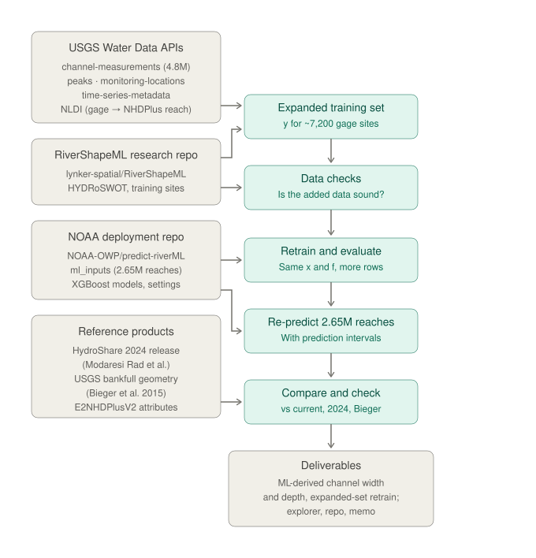

More gage sites, better-constrained targets, and a re-predicted national product with prediction intervals
Andrew Sommerlot · andrewsommerlot@gmail.com · October 2026 · draft v2
RiverShapeML (Modaresi Rad et al., 2024) learns bankfull width and depth from gage measurements and predicts them for all 2.65 million NHDPlus reaches in CONUS. Its training data come from HYDRoSWOT, which holds acoustic Doppler (ADCP) measurements through 2014. USGS now publishes every channel measurement it makes, by every method (wading, bridge, cableway, boat), through the Water Data OGC API: 4.77 million records. I rebuilt the training targets from those records using the RiverShapeML and AHGestimation conventions, kept the model, features and deployment pipeline unchanged, and asked one question: does the added data improve the model where it is weakest?
The work builds directly on Arash Modaresi Rad's RiverShapeML and the public NOAA-OWP/predict-riverML pipeline, and uses Mike Johnson's AHGestimation package for the target fits. The deployment pipeline is clean and complete enough that its national outputs reproduced exactly from the published models, which made a controlled experiment like this one possible in a few weeks.
I walked a stretch of Shoal Creek in Austin, Texas, to see how a reach-averaged geometry product compares with the channel on the ground. Over a few hundred meters the channel moves from a walled, rock-lined section with a built low-flow channel, to an incised section held by gabions and a bedrock ledge, to a section rebuilding a small floodplain below a failed grade control. A single bankfull value for the whole 8.2 km reach (COMID 5781223) is the right abstraction for a national product, so that variability is not the subject here.
The gage at the downstream end of the walk is. USGS 08156675 (Shoal Creek at Silverway Drive) has 68 width measurements. HYDRoSWOT has 2, both boat measurements from 2009, so the site falls below the 5-measurement minimum. The other 66, mostly wading measurements, are not in HYDRoSWOT at all. The question this note answers is how common that situation is, and what the model gains when those measurements are used.

Figure 1. Process. Each box is a script in the accompanying repository, and the full table-level lineage (35 tables, 17 operations, each with source, retrieval date and commit) is checked automatically on every run.
Measurements. All USGS channel measurements were retrieved from the channel-measurements collection
of the USGS Water Data OGC API (4,772,063 records), with site metadata and annual peaks from the
monitoring-locations and peaks collections. Gages were linked to NHDPlus reaches with the NLDI; existing
RiverShapeML sites keep their published COMIDs. Candidate new sites are CONUS gages with at least 5
measurements since 2000 and at least 10 years of daily flow (4,501 sites; 3,192 linked to a reach).
Targets. For each site, width, mean depth (area / width) and velocity were converted to SI units and
screened with RiverShapeML's sanity rules (width < 4 km, depth < 65 m, Q ≤ 1.1 × maximum annual peak).
Hydraulic geometry was then fit with AHGestimation (mad_filter → qva_filter → ahg_estimate), which
fits W = aQ^b, D = cQ^f and V = kQ^m jointly under continuity, and each curve was evaluated at the 2-year
flood, Q₂. I took Q₂ as the median of the annual peak series, which is the 2-year flood by definition on an
annual-maximum basis (England et al., 2019; Institute of Hydrology, 1999); it agrees with RiverShapeML's
fitted values at shared sites (median ratio 0.97). The target is y = ln(1 + W_bf) with W_bf in meters, as in
RiverShapeML, and likewise for depth. Sites where depth decreases with flow (f < 0) were dropped (53 sites).
Target filter. RiverShapeML keeps sites whose width–discharge fit has R² ≥ 0.6. Many well-measured sites fail that test because width barely changes with flow, not because the target is uncertain: 3,636 of the 6,928 width targets here would fail it, with a median standard error of 0.037 on the log target. I replaced it with a precision filter: standard error of the log target at Q₂ ≤ 0.2, Q₂ ≤ 3 × the largest measured flow (limits extrapolation), and at least 5 measurements.
Model. Features, feature engineering, missing-value handling and inference follow predict-riverML exactly
(30 features from ml_inputs.parquet). I first reproduced the deployed models' national predictions (width
median 18.27 m vs 18.43 m in their saved statistics; depth identical). For retraining I kept their XGBoost
learning rate and sampling settings but chose tree depth, minimum child weight and number of trees by a
regularization sweep with early stopping on a reach-grouped 70/15/15 split (depth 6, min_child_weight 5,
about 2,450 trees). This matched the deployed settings' held-out accuracy with roughly a quarter of the
trees and much less fit to the training data (test log R² 0.84 for width, 0.76 for depth). All runs below
use the same settings, so only the training data differ.
Experiment. One comparison, with everything but the training data held fixed:
| Run | Training sites | Targets built from |
|---|---|---|
| A, existing RiverShapeML data | Existing RiverShapeML sites | HYDRoSWOT measurements only |
| B2, expanded training set | Existing plus new sites | All USGS measurements |
Both are scored with 5-fold cross-validation grouped by reach (3 seeds) on the same held-out sites, against the all-measurement targets, which rest on about ten times more measurements per site. Because A never trained on those targets, both runs are also scored against the HYDRoSWOT-only targets (the reproduction check). HYDRoSWOT records maximum rather than mean depth, so A's depth target uses mean depth from the USGS records of the same HYDRoSWOT visits (97% match by date and discharge). Error is reported as ln(predicted / observed), summarized as median absolute error (%), median bias (%), share of sites within a factor of 2, and R² in log space.
Prediction intervals. The B2 model was refit on all sites and applied to every reach through the deployment pipeline. Split-conformal 90% prediction intervals (Lei et al., 2018) were computed per drainage-area class from held-out residuals. Coverage was then checked on sites unseen by both the model and the calibration (0.88–0.90 across classes).
| Drainage area (km²) | Width sites today (R² ≥ 0.6) | Expanded set: existing sites | Expanded set: new sites | Expanded total |
|---|---|---|---|---|
| < 10 | 66 | 38 | 73 | 111 |
| 10–100 | 596 | 560 | 597 | 1,157 |
| 100–1,000 | 1,766 | 1,919 | 876 | 2,795 |
| 1,000–10,000 | 1,395 | 1,620 | 465 | 2,085 |
| > 10,000 | 485 | 577 | 193 | 770 |
| Total | 4,375 | 4,719 | 2,209 | 6,928 |
Totals include 10 sites without a drainage area. Depth targets follow the same pattern (7,017 sites). The gain is largest relative to need: 58% of NHDPlus reaches drain less than 10 km², and those reaches were represented by 66 training sites.
On a 300-site sample, 97% of HYDRoSWOT measurements matched a record in the USGS collection (same day, discharge within 3%), and a typical site has 13 HYDRoSWOT measurements against 142 in total. Where the same deployment type appears in both, widths agree closely (bridge +0.1%, boat +2.4%, cableway +1.0%). Wading measurements are about 33% narrower than bridge measurements at the same flows, because they are taken at different cross sections; this is a location difference rather than an error, and AHGestimation's filters and the joint fit absorb most of it. Repeat-measurement scatter sets a noise floor of 8–15% for width and 14–19% for depth. The joint AHG fit changes the median width target by less than 1% relative to a plain log-log fit but corrects poorly conditioned sites (e.g., Walnut Creek: 28.1 m → 19.0 m).
Figure 2. Held-out median absolute error and median bias by drainage-area class: the same model trained on the existing RiverShapeML data (A) and on the expanded training set (B2). Same settings, same held-out sites.
| Width: A → B2 | Depth: A → B2 | |
|---|---|---|
| Median absolute error, all sites | 25.4% → 22.4% | 23.8% → 20.9% |
| Median absolute error, < 10 km² | 78% → 41% | 72% → 32% |
| Median bias, < 10 km² | +67% → +5% | +72% → +7% |
| Within a factor of 2, all sites | 89% → 92% | 89% → 94% |
| Log R², all sites | 0.77 → 0.82 | 0.66 → 0.76 |
The model trained on the existing data overpredicts small streams because it has almost no small streams to learn from; the new sites remove most of that bias. Gains are smaller but consistent in larger basins (width 25% → 20% above 10,000 km²). Overall, about half to two-thirds of the gain comes from the better-constrained targets at existing sites; in small streams nearly all of it comes from the new sites. For context, repeat-measurement scatter means no model can do much better than about 10–15% median error on width.
Reproduction check. Scored against the HYDRoSWOT-only targets at existing sites, the two runs are within a percentage point: width 20.8% (A) vs 20.0% (B2), depth 18.3% vs 18.4%. The expanded model gives up nothing on the original problem.

Figure 3. Median bankfull width by drainage area across all CONUS reaches for the current model (predict-riverML), the 2024 HydroShare release, the expanded-set retrain with its 90% prediction interval, and the Bieger et al. (2015) regional curves. The shaded region holds 44% of reaches.
| Check (all 2.6 M reaches) | Expanded-set retrain | Current model | 2024 release |
|---|---|---|---|
| Width > 1 km | 0.002% | 0.47% | 0.013% |
| Width / depth > 100 | 0.09% | 1.94% | 0.05% |
| Width halves going downstream | 2.2% | 3.6% | 5.3% |
| Width–drainage-area exponent (Bieger: 0.36) | 0.23 | 0.15 | 0.06 |
| Depth–drainage-area exponent (Bieger: 0.25) | 0.16 | 0.12 | 0.00 |
| Median ratio to Bieger width | 1.84 | 2.88 | 3.28 |
Between 100 and 10,000 km² the three ML products agree closely (median widths within about 10%). Above 10,000 km² the current model runs wider (median 152 m, against 122 m for the retrain and 110 m for the 2024 release), and all curves wobble there because few reaches fall in each bin and large rivers of different character (e.g., the Colorado and the Missouri) share them. Below 10 km² they diverge: median widths are 9.1 m (expanded-set retrain), 17.6 m (current model), 26.5 m (2024 release) and 3.5 m (Bieger). Downstream scaling moves toward the regional curves, and implausibly wide reaches nearly disappear. Prediction intervals are honest about where the model knows least: for width they span roughly 0.55–1.9× the prediction above 10 km² and 0.36–4.2× below it.
The Silverway reach illustrates both the improvement and its limit. The retrain predicts 15.8 m wide and 0.99 m deep (current model 14.8 m / 1.29 m; 2024 release 19.6 m / 1.51 m). The Silverway site itself is not in the expanded training set: its Q₂ (2,700 cfs, 76 m³/s) is 5.2 times the largest measured flow, so its target would be an extrapolation and the filter excludes it.
The headwater gap is narrower but not closed. Below about 5 km² there are still only ~50 training sites for 1.16 million reaches. Tree ensembles cannot extrapolate beyond the range of their training targets, so predictions flatten (and in all three products bend upward) at the smallest drainage areas rather than continuing the downstream trend. The ratio to Bieger widths remains 1.8 overall. Part of that gap is definitional: Bieger's field bankfull indicators and a Q₂-based target are not the same quantity, and the Q₂ convention likely overstates bankfull flow in small, flashy basins.
Gaged is not ungaged. All accuracy figures are for reaches with gages, which skew toward larger, more stable, more often modified channels. The conformal intervals inherit that assumption: they are calibrated on gaged sites and are exchangeable only to the extent that ungaged reaches resemble them.
Some useful data remain unused. About 1,300 candidate gages did not link to a reach through the NLDI, and about 7,000 sites have five or more measurements but less than 10 years of daily flow. The latter could use National Water Model flood frequencies, which the RiverShapeML codebase already supports; at gages NWM-based Q₂ agrees well overall (log R² ~0.80) but less well under 10 km² (0.47), which argues for using it with an uncertainty term.
Two observations I could not resolve from the public record. The current deployed models and the 2024 HydroShare release differ more than I expected (log R² ~0.35 for width between them), and the HydroShare file contains about 65,000 duplicated reach IDs. Both are probably explained by a model update between releases, and they are noted here as questions, not findings.
These are offered as starting points for a conversation; the team will know which matter and which have already been considered.
I would be glad to prototype any of these within the predict-riverML structure so that the results drop straight into the existing pipeline.
Repository: github.com/drmerlot/rivershapeml-more-data (private; access on request). It contains every
script, a single run_all.sh that rebuilds all results from public sources, a checked data-lineage record,
an interactive notebook (marimo) for exploring sites, targets, runs and the national product, and the
re-predicted product ("ML-derived channel width and depth, expanded-set retrain") with 90% prediction
intervals for every reach.
This work stands on Arash Modaresi Rad's RiverShapeML research and the NOAA Office of Water Prediction's open predict-riverML deployment pipeline, whose published models, inputs and inference code made exact reproduction straightforward. Target fitting uses AHGestimation by Mike Johnson, with contributions from Arash Modaresi Rad. Data are from the USGS (HYDRoSWOT; Water Data APIs; NLDI), the E2NHDPlus attributes, and the Bieger et al. (2015) regional curves (USGS ScienceBase). Any errors of interpretation are mine.